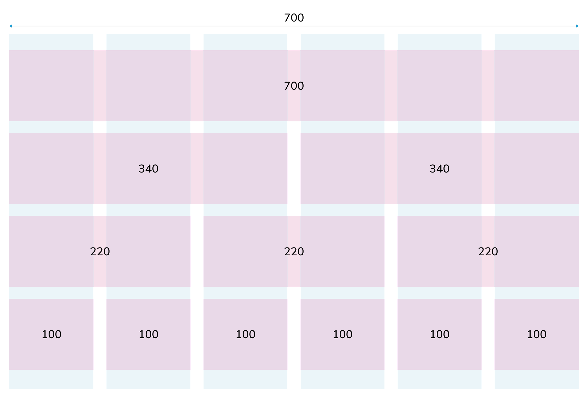

Сетка
Колоночная сетка
Вертикальный ритм задается 6 колонками (столбцами). В рамках одного состояния экрана их количество и размер остаются одинаковыми. В пространстве между колонками (межколоннике) элементы размещаться не должны.
Используя переменные для сетки, можно настроить необходимое для дизайна количество контейнеров. При этом разметка рабочих областей происходит строго по выбранной сетке и может делить контент на 1, 2, 3, 6 горизонтальных контейнеров. Их количество и сочетания могут варьироваться от страницы к странице.
Адаптивная сетка
Наша сетка имеет три состояния: десктоп, планшет, смартфон.
На картинках ниже представлены сетки для экранов разной ширины, с помощью которых выстраивается адаптивная верстка сайта.
Адаптивная сетка
6-ти колоночная сетка
Для разрешений экрана 1040px+
- Ширина контентной области: 700px
- Размер колонки: 100px
- Межколонник: 20px
Ширина бокового меню не должна превышать 300px.
Для разрешений экрана 1040px — 700px
- Ширина контентной области: масштабируемая
- Поля: 40px
- Межколонник: 20px
4-х колоночная сетка
Для разрешений экрана до 700px
- Ширина контентной области: масштабируемая
- Поля: 12px
- Межколонник: 12px